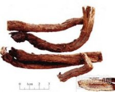

川木香

拼音
Chuān Mù Xiānɡ
别名
木香、铁杆木香、槽子木香
来源
本品为菊科植物川木香Vladimiria souliei （Franch.） Ling或灰毛川木香Vladimiria souliei （Franch.） Ling var. cinerea Ling的干燥根。秋季采挖，除去须根、泥沙及根头上的胶状物，干燥。
生境分布
生于海拔3000m以上的高山草地。主产四川。
药材特点
多年生草本，几无茎。根粗壮，圆柱形。叶丛生，呈莲座状，卵状披针形，矩圆状披针形或椭圆形，长20～30cm，宽10～20cm，羽状中裂，具5～7对裂片，或不分裂，裂片边缘具不规则齿裂，两面被毛；叶柄长8～20cm。头状花序数个集生于枝顶；总苞片6层，革质，绿色带紫，顶端凸尖，边缘有睫毛；全为管状花，紫色，长约4cm。瘦果扁平，有棱；冠毛芒状。花期7～8月，果期8～9月。
性状
本品呈圆柱形或有纵槽的半圆柱形，稍弯曲，长10～30cm，直径1～3cm。表面黄褐色或棕褐色，具皱纵纹，外皮脱落处可见丝瓜络状细筋脉；根头偶有黑色发黏的胶状物，习称“油头”。体较轻，质硬脆，易折断，断面黄白色或黄色，有深黄色稀疏油点及裂隙，木部宽广，有放射状纹理；有的中心呈枯朽状。气微香，味苦，嚼之粘牙。
性味
辛、苦，温。
功能主治
行气止痛。用于脘腹胀痛，肠鸣腹泻，里急后重，两胁不舒，肝胆疼痛。
用法用量
3～9g。
化学成分
含挥发油；商品川木香根中含川木香内酯（mokko lactone）。
药理作用
1：无药理作用数据
摘录
《中国药典》